■ Interview subject | Liu Xiangyang
■ Reporter | Zhang Yue
■ Editor | Zhou Yimeng
■ Editor in chief | Chen Xiaojun
Photographer profile
Liu Xiangyang is a man born in June 1967. He is from Quyang County, Baoding, Hebei Province. He is a member of the China Association for Promoting Democracy. He is a member of the China Photographers Association. He was named one of the Top Ten Photographers of Hebei. He is vice chairman of the Baoding Photographers Association. Liu Xiangyang works in news and documentary photography. He has photographed for 36 years and has wide experience. After the Xiongan New Area was set up in 2017, he was one of the first photographers sent to record it. He has received honors such as the Top Ten News Figures Who Moved Hebei, the Top Ten Caring People of Baoding, and the Baoding Model Worker. He won the Grand Prize at the Responsibility China national photography event, a Bronze Award at the national art photography exhibition, and a Gold Award at the Hebei art photography contest. He has published many works in photography journals. He published the book Collected Photographs of Liu Xiangyang.
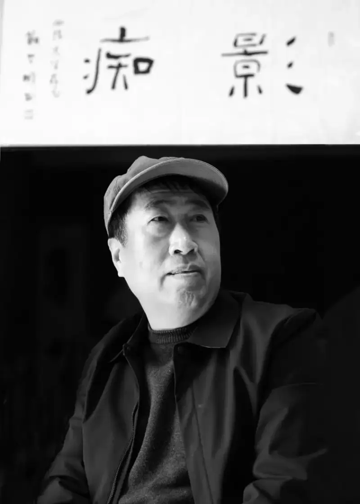
Portrait of Liu Xiangyang. Photo by Zhang Yue at the Xiongan New Area Administrative Committee.
Zhang Yue: Can you tell us about your childhood? How did you get your first camera, and what did it mean to you?
Liu Xiangyang: I was born in June 1967 in Nanxingshu, a village in Quyang County, Baoding, Hebei. My father was sick for many years. My mother raised my two brothers, my sister, and me on her own. Later my sister suddenly fell seriously ill. The hardship was hard to imagine. As the eldest son, I had to leave school in tears and go away to work. I carried stones on the railway bed from Beijing to Tongzhou to hold the slope. I worked from dawn to dark for a year. The boss kept half my pay. I took home only 2,000 yuan and gave it to my mother for my sister treatment. After I returned to the village, I farmed with my mother. I was at the age to marry. My father asked someone to find me a wife. Even a disabled girl in the village turned me down because my family was poor. This hit me hard. I realized I had to stand on my own so people would respect me. To do that I had to learn, build skills, and hold to an ideal. Then I thought of the fine photos I had seen in a newspaper I found while working. I made up my mind to learn photography and become a photojournalist.
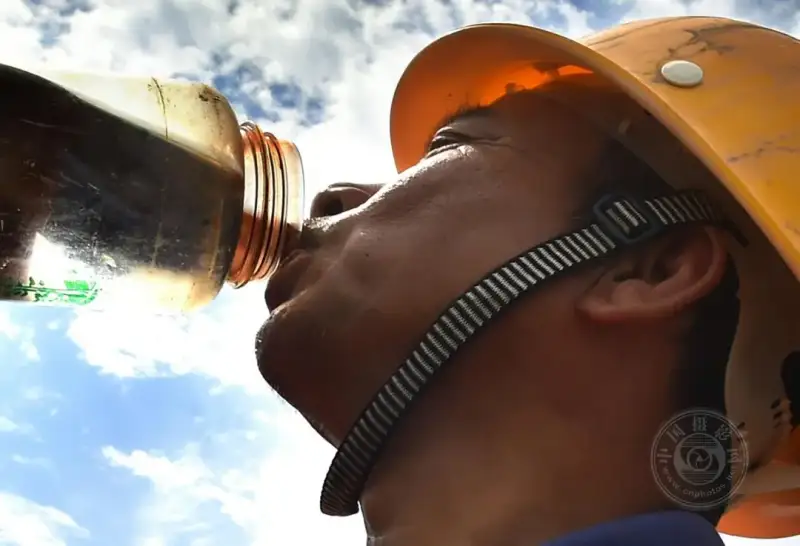
A construction worker drinks water on a hot site. He had already worked four hours straight. Photo taken in 2018 at the Xiongan Citizen Center construction site.
To learn photography I needed a camera. But my family was so poor. How could I buy one? One day my father felt bad that my mother dug the soil with my younger brother and sister. He wanted to buy a donkey to help her. He borrowed 300 yuan from my uncle. I saw him put the money in a cabinet. I wanted to take it to buy a camera, but I feared my parents would scold me. That night I could not sleep. I thought about it all night. At dawn I made up my mind. I took the money, took the train to the provincial capital, and spent 220 yuan on a Seagull camera and four rolls of film. I did not eat a single meal that day. I went home on an empty stomach.
When I got home, my parents had looked for me all day. I was gone, and the money was gone. When my father learned I had stolen the money for a camera, he slapped me out into the yard. He shouted: "You worthless boy. No one in our family ever had a photo taken. Cameras are for rich people. You worthless boy..."
Even though my father beat me, I was happy inside. I had a camera of my own. I swore to myself that I would build a career.
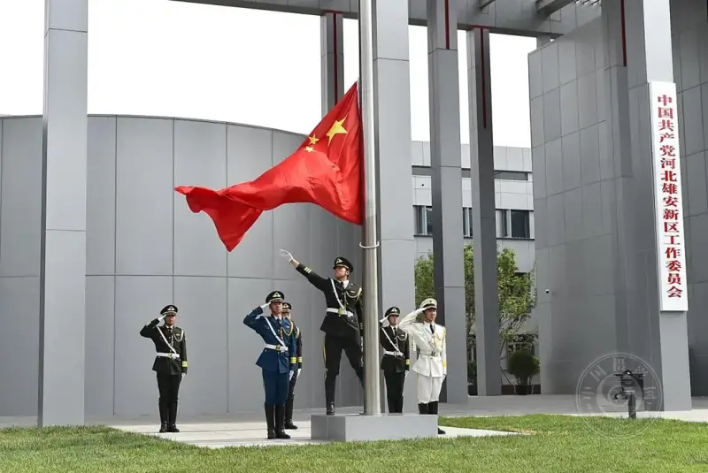
On October 1, 2018, in the courtyard of the new Xiongan Citizen Center, the Xiongan Party Working Committee held a plaque-unveiling ceremony.
Zhang Yue: What challenges did you face when you taught yourself photography, and how did you overcome them?
Liu Xiangyang: A camera alone was not enough. I heard there was a state-run photo studio in the county town. I wanted to work there as an apprentice to learn.
At that time the studio did not take apprentices. I begged the master to let me work for free, only to learn. Even so, it did not work at first. I arrived early every day to fetch water, sweep the floor, and do odd jobs. My persistence finally moved Master Wang at the studio. He began to teach me. At first my photos came out too dark or too light. They had no focus and were not clear. Master Wang saw this and told me patiently. To learn well I had to be careful. First the image had to be sharp. Then the exposure had to be right. To get a sharp photo I had to hold the camera steady. Otherwise the pictures were blurry. So I first practiced holding it steady. I tied a brick to my arm every day and held the camera. At first my arm ached and swelled, but I said nothing and kept going. Hard work paid off. After repeated effort, my photos became clear and the exposure was right. Master Wang praised me. He said I had the makings of a photographer. Later he took me into the darkroom and taught me to develop film and make enlargements. In the end I learned to take photos and process them.
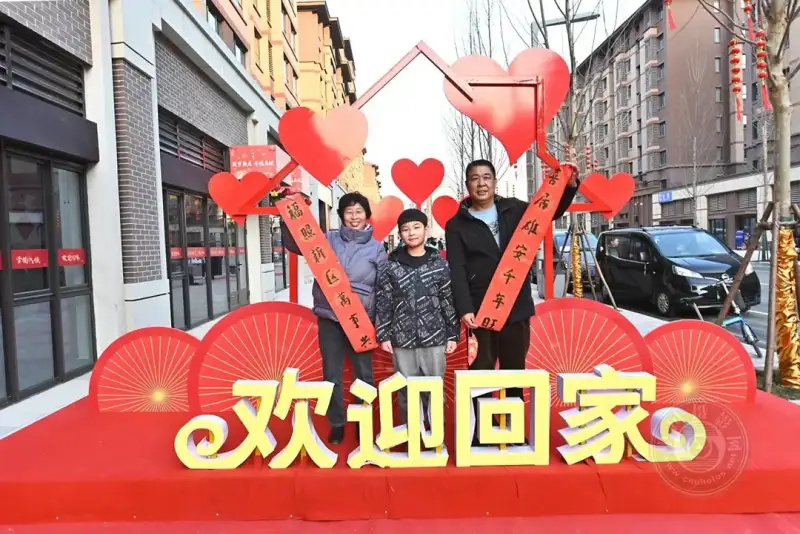
In October 2021, the first group of residents relocated from Gongzhuang Village in Rongcheng County, Xiongan, moved happily into the new Rongdong resettlement area.
Zhang Yue: Photographing the Hope Project and helping students has been a major part of your photography and your life. How did your own childhood lead you to this work? Can you share a case where your photos drew public attention and helped a poor student?
Liu Xiangyang: As I said, after half a year of secret study I knew the craft. But what should I photograph? I did not use my camera to open a studio and make money. Instead I went into the mountains to photograph poor children who could not afford school. This tied to my own story. I felt photography might help them, so children in the villages would not drop out because of poverty.
From that time I began what people called the love project behind the lens. I walked through more than 360 villages in Quyang County on my own. I set up files for 500 children who had dropped out. Through private and public donations, 108 poor students stayed in school. I not only paid for their schooling. I also taught them photography. I wanted each of them to learn a skill, so they could start a business and earn a living later.
To reach the hardest and most remote places, I wore out more than 50 pairs of shoes. I broke five bicycles and two motorcycles. I climbed mountains on foot. I rode hidden on tractors. Several times I lost my way in the hills. I nearly starved or froze to death there.
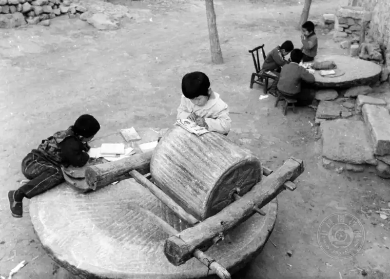
The school was run-down and unsafe, so the children could not use the classroom. They held class on the village stone mill. (1993)
I remember one time I walked in the hills for a day and a night without a bite to eat. At night I finally found a farmhouse. The woman made me a bowl of cornmeal and potato dumplings. That is the best food I have ever tasted. Another time I got lost in the hills. An old man rescued me. I was thirsty and drank a whole enamel mug of jujube wine without thinking. I was drunk for two days before I woke up.
One student I helped was Cui Jinglin. She was playing at her grandmother home when a pot of boiling water burned her. The burn covered 75 percent of her body. Two full months passed. The burn did not heal. It grew worse. The child lay dying in pain. Her parents were poor. They had borrowed from every relative and neighbor, but they could not raise more money for her treatment. The family fell into despair. In the photos, the little girl lay in bed with thick black scars all over her body. Some areas were still oozing. Her large eyes showed endless hope. I posted the photos right away on the local Baidu Tieba forum and on photography forums. Netizens shared them. Media across the country picked them up. In the end, public donations raised 150,000 yuan. Little Jinglin was treated successfully.
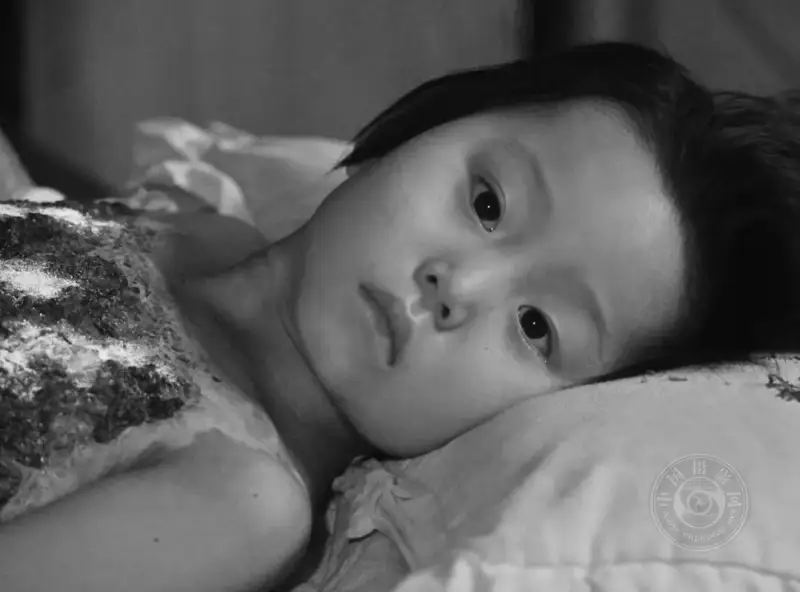
The poor girl Cui Jinglin was badly burned by boiling water. (March 2003)
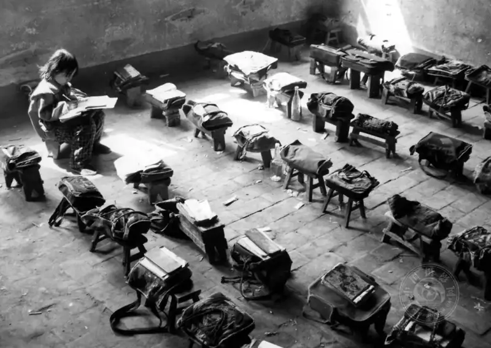
The burned girl Cui Jinglin, whom Liu Xiangyang helped, returned to school after she recovered. (Photo taken October 2003)
Another was Zhang Xuan from Xiaomu Village. When she was 13, her father died and her mother left. She and her sister became orphans. Zhang Xuan held the family together on young shoulders. She and her sister depended on each other and stayed in school. I took a series of photos of the two sisters. I also wrote an article titled A Strong Orphan Girl Takes Her Sister to School. After it was published, kind people gave money. Zhang Xuan was chosen as one of the Top Ten Figures Who Moved Hebei in 2007.
Over more than 30 years I cannot count the dangers I faced. But I remember the name of every child I helped. They stay clear in my mind.
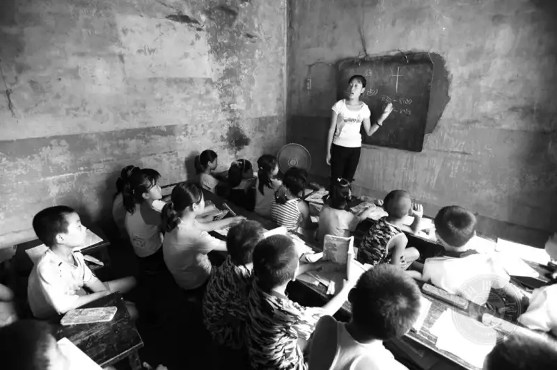
The dim classroom at Zhongxiaomu Village school in Quyang County. (Photo taken 1992)
Zhang Yue: How did your time at the photography program of the Tsinghua Academy of Arts and Design affect your career? How did you apply what you learned?
Liu Xiangyang: In spring 2000, the China Photonews held a national essay contest. I wrote an essay titled You Should Never, Never Expose Film to the Sun. It won second prize. The prize was free study in the photography program at the Tsinghua Academy of Arts and Design.
After I finished, a Beijing newspaper wanted to hire me as a reporter. This was my dream for years. But I had elderly parents and two young daughters. Many poor students still depended on me. The children in the hills were the source of my work. They needed me. So I gave up the chance to build a career in Beijing. I went back to my small hometown of Quyang.
Back home, I organized the photos I had taken over the years. I made slide shows called Call of the Distant Mountains and I Want to Go to School. Every weekend I showed them for free at primary and middle schools in the county town. I wanted city children to see how children in the hills studied. I wanted them to value their own chance to go to school.
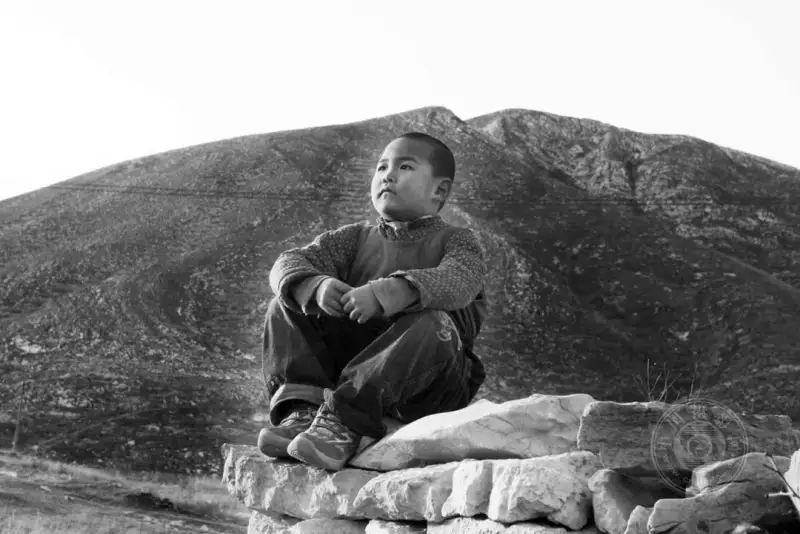
The poor student Zhang Xiangyang from Xian Village, Quyang County, looks into the distance. He longs to leave the mountains. (Photo taken 1996)
Over several years I gave more than 30 free shows at middle schools across the county. They had a good effect. The county recognized my work. In 2001, county leaders learned my story. They sent someone to ask me to come. The Ding Kiln heritage site office needed a photographer. They said my skill was strong and asked me to work at the county cultural center. I said I was self-taught with no photography degree. Would that be a problem? They said I could start as a temporary worker for 500 yuan a month. If I worked hard, I could become a permanent staff member later. If not, they could send me home at any time. I agreed at once. The chance was too good to miss.
In this way, the Ding Kiln heritage office took me on as an exception, a farmer with a camera. Later I was moved to the county publicity department to work as a professional photographer. My long photography dream came true.
In May 2004 I became a member of the China Photographers Association. My work helping poor children became known across the province. The party and the government gave me many honors. In 2005 I was named one of the First Ten Outstanding Youth of Quyang County. In 2006 I was named one of the Ten Warm-Hearted People of Hebei. In 2009 I was named one of the First Ten Figures Who Moved Quyang. In 2012 I was named one of the Top Ten News Figures Who Moved Hebei. I also received the titles of Baoding Top Ten Model Citizen, Baoding Model Worker, member of the Baoding CPPCC, and member of the 10th Hebei Federation of Literary and Art Circles.
Because my work stood out, the office made me a permanent staff member in 2011. In 2013 I moved to the magazine Hebei Work Safety as a full-time photojournalist. In April 2017, after Xiongan New Area was founded, I moved to the Xiongan Administrative Committee to photograph its work. I became a full-time photojournalist.
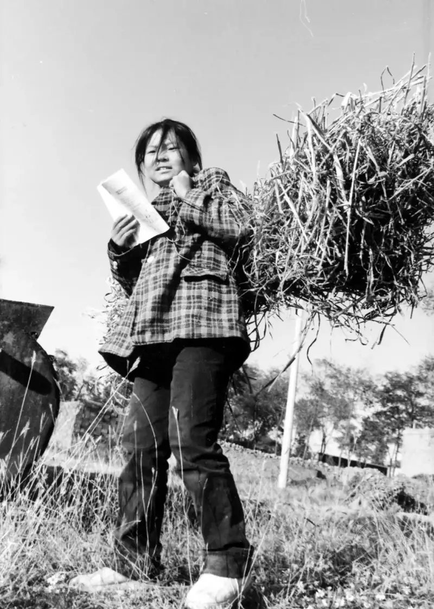
The poor student Li Jing dropped out because she could not pay the 135 yuan school fee. She brings her textbook along when she does farm work.
She longs to return to her school as soon as possible. (Photo taken 1997, Xian Village, Quyang County)
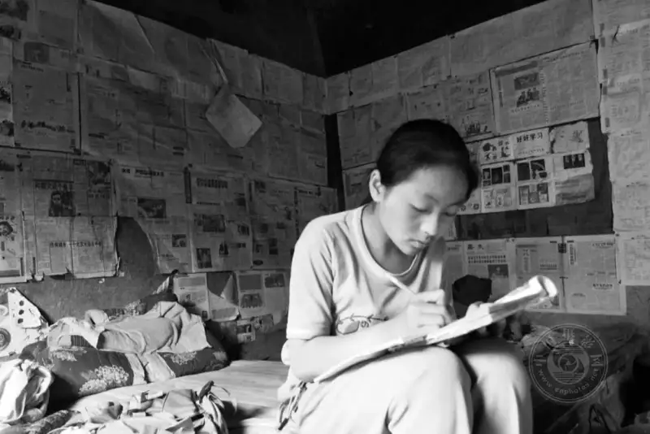
A hardworking village girl will not eat until she finishes her homework. (Photo taken 1999)
I am over 50, but I feel full of confidence and energy. I love photography. Photography made my life what it is.
At the 2012 Spring Festival, after I was named among the Ten Figures Who Moved Hebei, I went home and wept at my father grave. My father had been dead for years, but I never forgot that hard slap. That slap gave me my self-respect and my photography dream. My results came from my own effort, but I also thank many kind people who helped me. I thank my parents. I thank my wife, who supports me quietly. And I thank the good times I was born into.
Zhang Yue: You met your wife through photography. Can you share your love story? How does she support your work?
Liu Xiangyang: One summer day in 1987 at noon, I had just spent a month photographing in the hills. On my walk back to the county town, I saw a young woman ahead. She rode a Flying Pigeon bicycle and wore a white dress. She had clear, fine features. I was drawn to her at once. Was she not the partner of my dreams? I stepped into the road and stopped her with both hands. It was midday and the road was empty. She jumped off her bike, afraid I was a bad person. She asked, startled, what I wanted. I quickly explained: "I am not a bad person. You have such grace. I only want to take one photo of you." At first she refused. After I explained several times, she saw I meant no harm and agreed. I took out my camera, focused, and took a few shots. I asked where she worked. Then I waved and said it was fine, she could go. She rode away as fast as she could.
When I got home, I developed the film and made several 7-inch black-and-white enlargements. The next day I brought them to her workplace. I learned her name was Li Yajie. She worked at the county carpet factory. She praised my skill. We grew close and began to date. But her parents firmly opposed it. They would not let her marry a poor photographer like me. But she felt I had ideals and could be trusted.
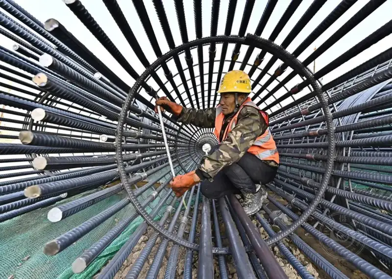
In 2022 at the Xiongan International Trade Center construction site, a worker measures the thickness of a sunken steel beam.
On New Year Day 1988, my partner broke with her family and decided to marry me. There was no bride price and no wedding party. I picked her up from the factory on a bicycle. I brought her to a rented room that cost 8 yuan a month. That was how we married. Only five years later, when our daughter was three, did the frozen family bond thaw. Her parents finally saw why their daughter had chosen the penniless young man. He was kind, caring, and ambitious. These qualities matter more to a young woman than money.
I thank photography for bringing me a loving partner. Since we married, my wife has given almost all her monthly wage to my camera work. She supported my cameras and the children I helped. After she lost her job in 1993, we did not even have money for soy sauce, let alone new clothes. But she never complained. In a flash we have been married more than 30 years. Our love is as fresh as at the start. Each time I see her, my resolve grows. She is my strongest support. I must work twice as hard to give her a happy life.
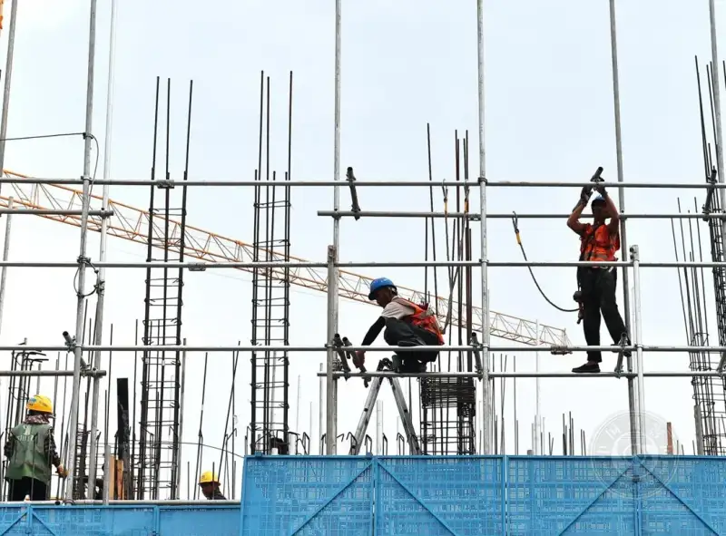
In 2021 at the Xiongan launch-area sports center site, several builders work hard.
Zhang Yue: By April 2024, Xiongan New Area had been through seven years. In planning, construction, and growth, it has drawn worldwide attention. How did you become its photographer? Conditions were harsh when building had just begun. Why did you go? Large-scale construction is risky to photograph. Did you ever meet an accident?
Liu Xiangyang: I did not think much about it then. I only wanted to use my camera to record the growth and changes of Xiongan. It was a new challenge for me. But after I arrived, I saw how harsh the living conditions were. The new area had just started. There were few staff and heavy work. I worked late almost every day. There were no weekends or holidays. I could not go home for months. But this was my choice. I told myself I must keep going. Slowly I adapted. I overcame every difficulty, and I have kept going until now.
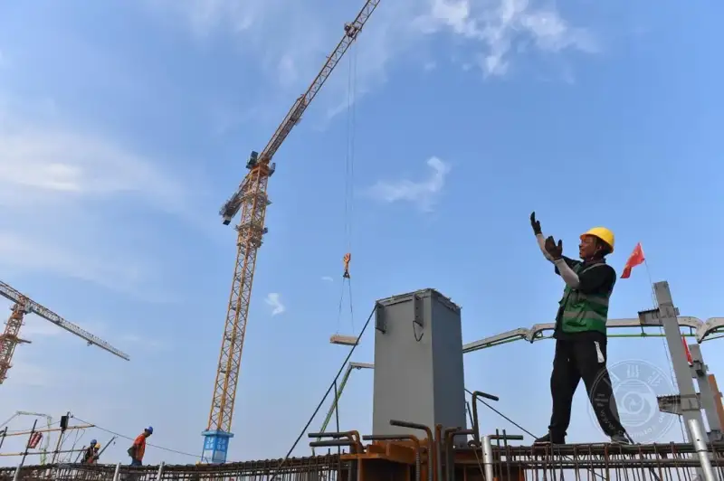
In March 2018, Xiongan first project, the Commercial Service Center, officially started. Builders direct the construction.
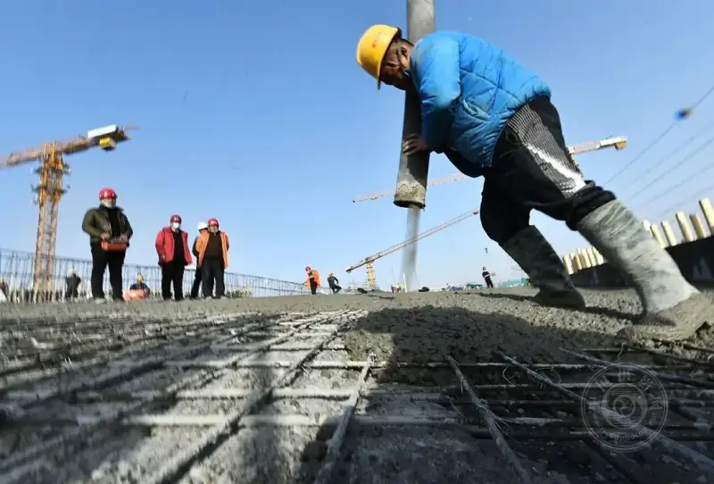
In 2019 at the Commercial Service Center site, several builders apply gray plaster.
In winter 2018, while I shot the main structure of the Commercial Service Center, I wanted a striking photo. I climbed the steel frame five stories high with the scaffold workers. I leaned half over the scaffold edge. I held my camera and looked for an angle. I was so focused that I stepped back, forgetting the danger. My foot slipped. I nearly fell off the scaffold. I could not help crying out. A scaffold worker heard me and rushed over to grab me. I owe my life to that worker. Otherwise the result would have been unthinkable.
The confusion of my early days in Xiongan soon gave way to my experience and judgment. I did not shoot blindly. I started with each village that was being demolished. I used the village look, the streets, and the homes as references. I recorded one household at a time. I had a purpose and a focus. I did not chase distant scenes. I recorded the local residents customs, folk ways, and daily life, one themed set after another, without missing a detail.
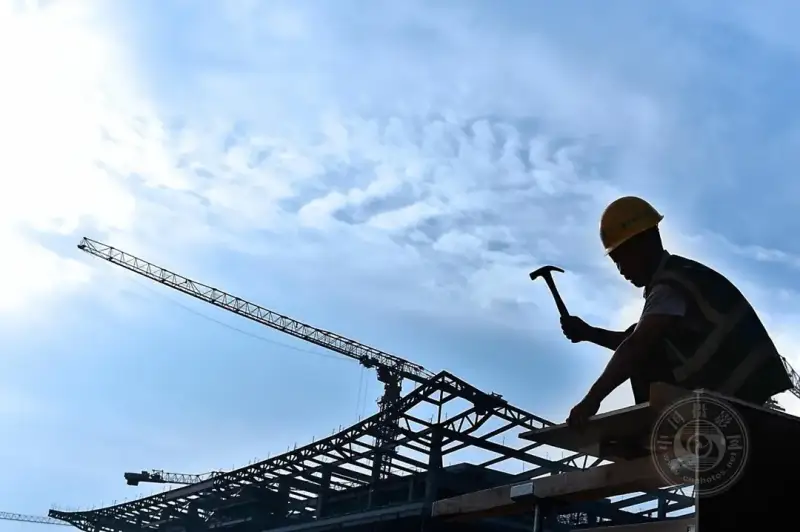
At the Commercial Service Center site, a builder works with care.
Zhang Yue: More than 200,000 builders worked day and night. Tower cranes stood like a forest. Lights blazed. The world largest site made new miracles every day. Towers rose by the day. How did this scene feel to you? What did this chance mean?
Liu Xiangyang: Since the 18th National Congress of the Party, the central leadership headed by Xi Jinping has pushed the major strategy to coordinate the development of Beijing, Tianjin, and Hebei. The goal is to move non-capital functions out of Beijing. It seeks a better way to develop dense, populated regions and to solve the big-city problems of China. Planning and building Xiongan New Area is a key step in this strategy. It will be a major site to take on Beijing non-capital functions. The new city is meant to be livable and people-centered. The buildings stay low. Blue and green spaces are woven together. The setting is beautiful. As companies and universities move in, the area will grow more lively. I missed the chance of Shenzhen and Pudong. This time I have Xiongan. I am full of confidence to take part in this national project. In May 2017 I came to work in Xiongan and picked up my camera to record it.
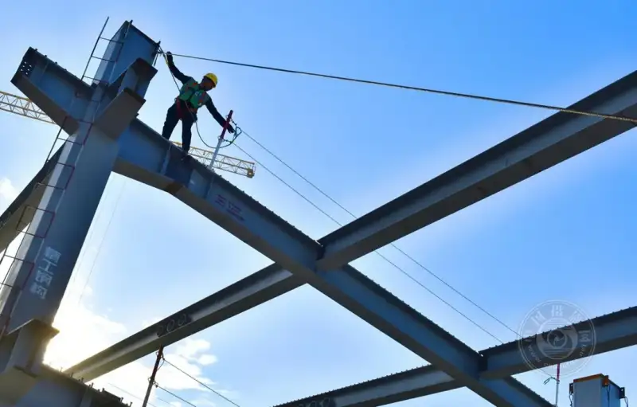
At the Rongdong resettlement housing site, a scaffold worker works on a steel beam more than 100 meters high.
Before Xiongan I photographed many rural subjects. In Xiongan, I quickly focused on two things: how village life changed, and the tens of thousands of builders who poured in. It was old wine in a new bottle. My way of seeing and working had a clear line back to my earlier work. But Xiongan is a new city, and that brought new challenges.
For example, Nanwenying Community is a model community that President Xi visited. Before the village was demolished, I had already met a village doctor there. The doctor was skilled, and we grew close. Each time I visited, I photographed the village. I shot its old look, the relocation drive, and the final demolition, the new resettlement area built on the same site, and the finished community where residents moved. I recorded the change from Nanwenying village to Nanwenying community in close, full detail.
I did not expect my accidental record of Nanwenying to become a widely noticed example. The same is true of the Rongdong resettlement site. I photographed the foundation digging, the groundbreaking ceremony, the rising floors, and the final rooftop. I recorded the towers going up and the daily lives of the builders. I recorded the birth of this new city.
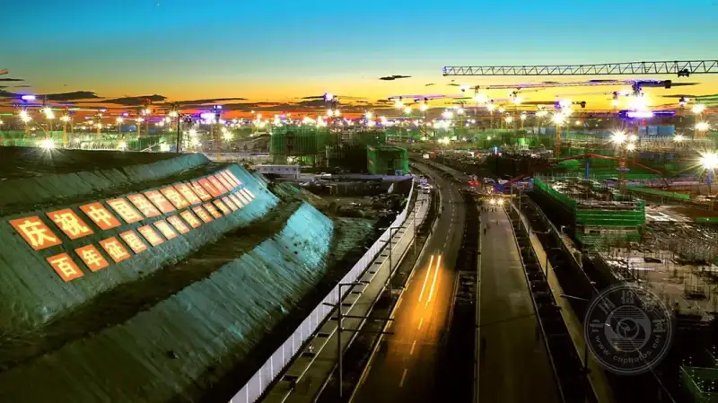
In December 2020 at the Rongdong site, lights blazed and cranes stood like a forest. The whole site was a hive of construction.
Zhang Yue: In 2020 you held a solo show, Happy Smiles, at Rongcheng Life Plaza. It showed more than 100 photos of builders smiles and family portraits of relocated residents. It ran 10 days and drew wide response. In 2022, your book Waiting for Rain, Waiting for You won an award at the 26th Hebei Photography Art Exhibition. You have much to show. What are your plans for your work and your future?
Liu Xiangyang: Works from the show won many awards in contests. At the show, I saw many ordinary people recognize themselves in the photos. They were happy. There were no portrait-rights disputes. Prints also last a long time. I hope that by 2027, the tenth anniversary of Xiongan, I can publish another book. It will gather my more than 20 themed sets from Xiongan. I want more people to understand the growth of the new area. The book will sum up my career and give something back to Xiongan.
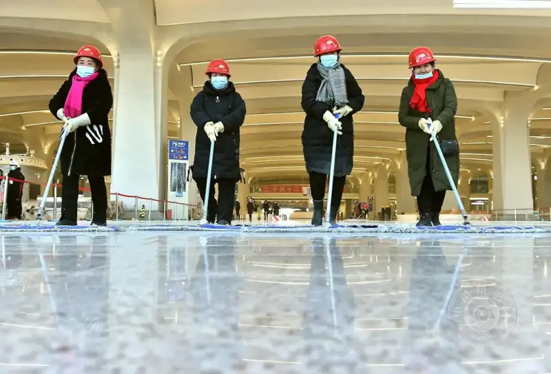
Sweeping. In 2020, inside the new Xiongan high-speed rail station platform, cleaners sweep the floor. The new station was about to open.
Zhang Yue: Besides your own work, you always help young photographers. In Xiongan you have given many free talks. They have given local enthusiasts a way to learn and pushed the Xiongan imaging record project. What do you think led to your success? What advice do you have for young photographers who want to use photography to help society?
Liu Xiangyang: I never studied journalism. I am fully self-taught. By a twist of fate I became a staff photographer. I have now worked at it for 38 years. Looking back, I did not find it especially hard. If you do your own job well and shoot with a light heart, you will gain. I can sum it up in three stages.
The first stage is technique. When you first buy a camera, everything feels new. You shoot whatever you see, every day, and never tire. This stage is about practice, even if the photos are not good. If you keep learning and shooting, interest grows. You will come to love photography. But if the camera sits unused and you never practice, you will never take root.
The second stage is mastery. After one or two years your skill matures. You can shoot anything and you understand the craft. At this point, stop shooting whatever is in front of you. Start looking for themed projects. Choose with purpose. Do not copy what others shoot. Pick a target, be patient with solitude, and stay with themes you know. Gradually you will find your feel. Good work will follow.
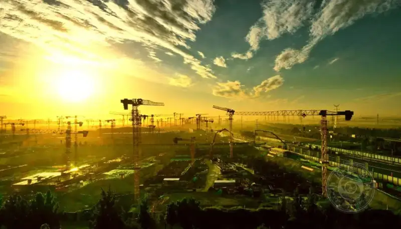
Building Xiongan New Area is a plan for a thousand years, a national undertaking. This glorious city of a thousand years is rising on Chinese soil.
The third stage is maturity. After years of shooting, you understand photography more deeply. Then choose one main direction you love and record it with care. At this point you must slow down. Decide what to shoot and what to leave out. Shoot with purpose. In your spare time, organize your themes. If a frame feels ordinary or a detail is missing, go back again and again. Do not mind the trouble. If one trip does not work, go a second and a third time until you are satisfied.
For example, my project 25 Years of Family Portraits at My Wife Parents Home. I shot it each Spring Festival and chose one photo a year. Over the years, a simple set of photos took on a strong sense of history.
During the 2017 Spring Festival, the well-known CCTV host Kang Hui brought a crew to my home to film a feature. It aired on the CCTV New Year special Year after Year. This set also won an award in the Great Nation, Small Home: 70 Years national exhibition held by the China Photographers Association for the 70th anniversary of the country. It was published and awarded by many media. It won high praise in photography circles and the wider public.
Zhang Yue: What project are you working on now?
Liu Xiangyang: My present theme will not change for a few years. I still work, and I mainly record the growth of Xiongan in Hebei. Over the next few years, I will organize the photos I have taken of Xiongan builders and construction scenes. I will make a book called Xiongan Memories and hold a show. They will close my photography career on a high note.
I am 58 now. I will retire in two years. After retirement I will go back to my home village and open a small photography workshop. I will teach young people from the surrounding villages the craft. They can learn photography and earn a living close to home, instead of leaving for hard work far away. If my health holds, I will keep visiting the mountain villages. I will keep shooting my project Folks back Home until I can no longer hold a camera.

Zhang Yue
Reporter and signed photographer for China Photo Network,
Born in the 1990s, a Chinese woman based in Beijing,
She has published hundreds of thousands of words of art criticism and political commentary.
She now studies for a master degree in photography and digital media at the graduate school of the Chinese National Academy of Arts.
She published the book Interviews with the Top Ten Photographers of China Photo Network.